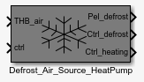
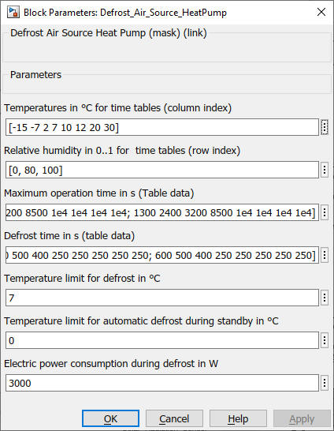

Defrost_Air_Source_HeatPump
Path: CARNOT/Control
Purpose
Defrost model for the
evaporator of an air source heat pump.
Description
The block is a model for
the ice formation and the defrosting of an air source heat pump.
The model describes the
defrosting with a hot gas bypass - not with a cycle inversion.
The mass of ice is increasing during the operation of the heat pump. The rate of
ice formation is dependent on the air temperature and the relative humidity.
After a certain maximum operation time the defrost is triggered. During the
defrost the thermal output on the secondary side is zero, only electric power is
consumed.
Depending on the air temperature and the relative humidity the defrosting is
operated for a certain time with a certain constant electric power.
The defrost is not acivated if the air temperature is above a certain threshold.
During the standby period of the heat pump the evaporator is "automatically"
loosing the ice due to the outdoor air temperature if the air temperature is
above a threshold. Set the automatic defrost temperature limit to a value above
the defrost temperature limit if you do not want to use this function.
Use measurement data to fit the
model to the 2-D look-up-table for the operation time as a function of air
temperature and humidity and for the defrost time and electric power during
defrost.
Input
Output
Mask and Parameters

Characteristics
Direct Feedthrough Yes
Sample
time
Inherited
from driving block
Vectorized
No